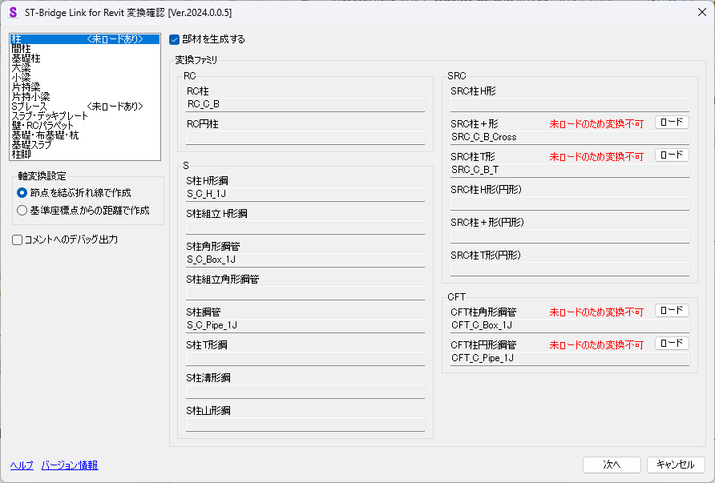

『ST-Bridge Link』起動時にプロジェクトにロードされた変換ファミリテーブルに
一致するファミリを抽出し、変換ファミリ項目にファミリ名称を表示する。
→ 柱脚の変換確認は こちら を参照

|
|
■ 部材変換
 |
各部材の「生成する／しない」を選択する
（生成しないを選択した場合は、変換ファミリ項目の内容に関わらずモデル生成しない） |
|
|
|
■ 変換ファミリ項目
| 表示 |
データ・ファミリの有無 |
モデル生成 |
| ファミリ名称が表示される |
ST-Bridgeファイルにデータが存在する／ロード済ファミリが存在する |
モデル生成する |
| 空欄 |
ST-Bridgeファイルにデータが存在しない／ロード済ファミリの存在に関わらず |
モデル生成しない |
| 未ロードのため変換不可 |
ST-Bridgeファイルにデータが存在する／ロード済ファミリが存在しない
※未ロードのファミリがある場合はタブに
"<未ロードあり>"を表示 |
モデル生成しない |
|
|
|
■ 軸変換設定
 |
通り軸に所属する節点を結ぶように軸を生成する。軸からずれている節点がある場合折れ線となる。 |
 |
基準点からの距離で軸を生成する。常に直線形状で軸が生成される。 |
|
|
|
■ コメントへのデバッグ出力
 |
生成インスタンスのコメントパラメータにSTBファイル上のID生成ログを「出力する／しない」を選択する。コメントパラメータには上書き出力される。 |
|
|
|
■ 各ボタン操作
 |
「未ロードのため変換不可」の場合に表示され、該当部材のファミリをロードするためのファミリ選択ダイアログを表示する |
 |
レベルマッピングを行う
→ レベルマッピング |
 |
変換確認を中止し ST-Bridge Link を終了する |
 |
『ST-Bridge Link』のヘルプを表示する |
 |
『ST-Bridge Link』のバージョン情報を表示する |
|
|
|